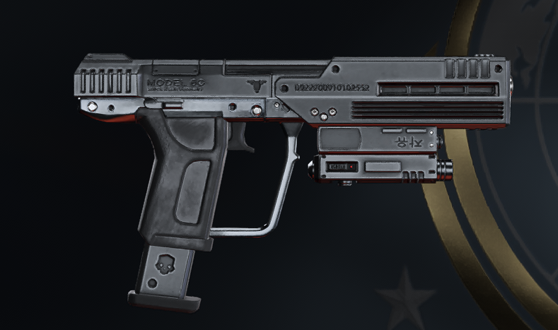

💡 헤일로 콜라보로 게임 '헬다이버즈2'에 추가된 권총에 한글이 새겨져 있는 걸 발견한 외국 게이머의 질문글
r/
r/Helldivers
·
헬다이버즈 게시판
이 권총에 왜 한글이 새겨져 있는 거임?
why is there Korean lettering on the socom pistol?

⬆ 2.6천
💬 댓글 95개
베스트 댓글
u/Waelder
·
⬆ 2,495
헤일로 원작 권총에 한글로 숫자
'칠(7)'
이 새겨져 있었기 때문임.
헬다이버즈 버전은 그걸
'자유'
라는 단어로 바꾼 거고.
u/Owen872r
·
⬆ 778
번지(헤일로 제작사)는 7만 보면 환장함
u/Expensive-Kiwi7170
·
⬆ 435
헤일로 오마주임. 헤일로의 UNSC 권총에는 시리즈마다 일본어·중국어·한국어가 새겨져 있었음. 헤일로3 ODST의 이 권총에는 한글 '칠'이 적혀 있었는데, 이번 헬다이버즈 콜라보에서 그 글자를 '자유(Freedom)'로 바꿔서 넣은 거임.
u/xx_swegshrek_xx
·
⬆ 40
슈퍼 코리안
이 만든 총이니까
u/ArelMCII
·
⬆ 24
슈퍼 어스에는 슈퍼 코리아가 아직도 섹터 2에 건재함
원문:
reddit.com/r/Helldivers
(업보트 2.6천)
번역:
page.cocy.io